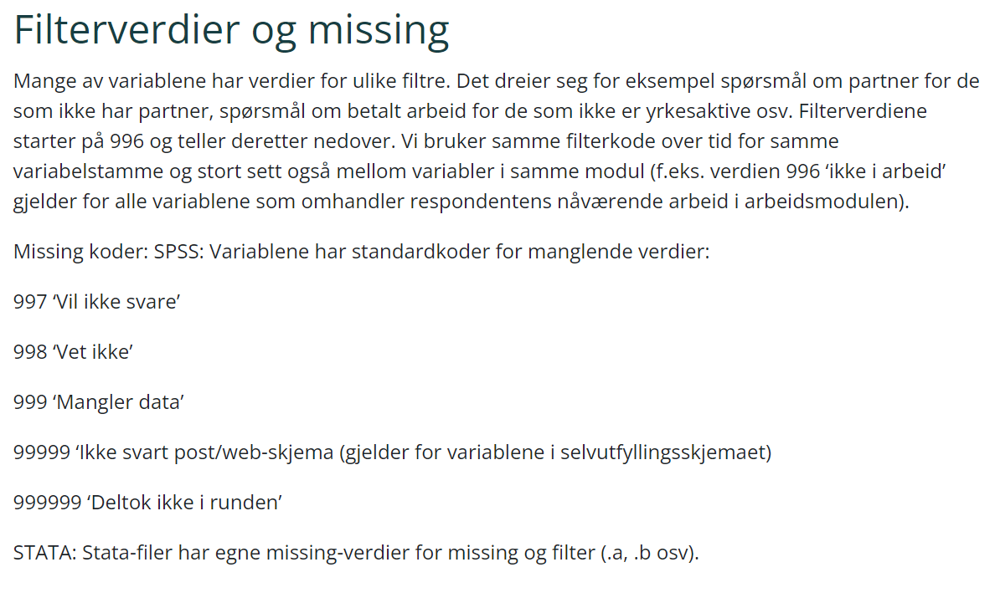

library(haven) # Importere data fra SAS, SPSS og Stata
library(tidyverse) # Pakker for generell datahåndtering og grafikk
library(labelled) # Håndtering av variable med labler, importert fra annen software3 Spesielt om data fra Stata og SPSS
I dette kapittelet skal vi bruke følgende pakker:
3.1 Håndtering av innebygde metadata
I samfunnsvitenskap er det dataformatene til softwaren SPSS og Stata ganske vanlig rett og slett fordi mange bruker disse softwarene. Antakeligvis er det grunnen til at Sikt (tidliger NSD), som er en stor leverandør av data til samfunnsvitenskapen, ofte leverer data i nettopp disse formatene SPSS eller Stata.
Dette er proprietære formater som i utgangspunktet krever lisens for å lese, men R kan lese disse med funksjoner i pakken {haven}. Så det er ikke her utfordringen ligger.
3.1.1 Variabler med labler
En type data som er mye brukt i samfunnsvitenskapen er surveydata, altså: data innhentet ved hjelp av spørreskjema. Slike data inneholder gjerne en god del kategoriske data eller man svarer på en likert-skala (f.eks. skala fra 1 til 5), men også kontinuerlige variable og kan også være tekstsvar.
Slike data er ofte kodet slik at bestemte verdier har en tekstlig betydning. F.eks. 1 = “gift” og 2 = “ugift”, eller 1 = “veldig fornøyd” og 5 = “veldig misfornøyd” osv.
Brukere av SPSS og Stata vil ofte lagre denne typen metadata i selve dataformatet med såkalte labler.
Dette kan være at selve variabelnavnet er ganske kryptisk, men har metadata som sier hva variabelen inneholder. I surveydata vil dette typisk være hele spørmålet som er stilt til respondendene. Tilsvarende vil svarverdiene være numeriske og ha tilknyttet en tekststreng som er hele svaralternativet fra spørreskjemaet. Dette er forsåvidt ikke så dumt, men i R ville man gjort dette på en annen måte, typisk med å lagre teksten direkte eller gjøre om til variabeltypen factor som ligner en del.
Surveydata vil imidlertid ofte inneholde relativt lange tekstverdier som gjør det tungvint. Men det finnes løsninger. For å gjøre en lang historie kort: Surveydata er best å håndtere med pakkene {labelled}. For videre analyser er det derimot vanligvis best å ha faktor-variable, så vi vil oftest konvertere dataene etter at de er lest inn i R. Det høres tungvindt ut, men konverteringen er bare et par linjer kode.
R har en rekke funksjoner for å jobbe med labelled data fra SPSS og Stata direkte. Men siden dette generelt er fremmede formater i R vil det være en del analysefunksjoner som ikke er laget for å håndtere dette og du kan lett få andre resultater enn du forventer av den grunn. Det bester er derfor å bruke disse funksjonene til å gjøre om til et ordinært R-format.
3.1.2 Missingverdier
I alle typer data og dataformater kan det være at man mangler informasjon. I surveydata vil det f.eks. være at noen spørsmål bare blir stilt til de som svart på et annet spørsmål eller noen vil ikke svare. I R angis manglende verdier med NA (“not available”). Det er også vanlig å kalle manglende verdier for missing, som betyr det samme. Hvis det er spesielle grunn til manglende informasjon, så vil man ha den informasjonen i en annen variabel og/eller fremkomme av dataenes dokumentasjon.
En spesiell utfordring er at i SPSS og Stata er det også mulig å bruke “user-defined missing-values”. Mange datasett dermed inneholde spesielle verdier som skal tolkes som manglende data, såkalt ‘missing’. Dette er egne koder som kan bety at respondenten ikke fikk stilt spørsmålet, ikke ville svare, eller andre grunner. For en variabel for inntekt kan f.eks. verdien 999999 betyr at vedkommende ikke ville svare. Når vi regner et gjennomsnitt er det da viktig at akkurat disse verdiene ikke inngår i beregningen.1
Et eksempel er dokumentasjonen for den norske studien NorLAG følgende om missingverdier:

Dette innebærer f.eks. at når man lager en frekvenstabell vil man få ut frekvenstabell for både gyldige verdier og missingverdier, men prosentuering vil bare være for de gyldige verdiene. Gitt at funksjonen støtter dette formatet, vel å merke. Hvis dette ikke er kodet riktig i datasettet vil missingverdiene kunne påvirke beregninger av gjennomsnitt vesentlig.
3.2 Løsning: Fiks alt i en fei
For å gjøre en lang historie kort, så trenger vi å fikse en del ting når vi leser inn data fra formater som Stata og SPSS. Den etterfølgende koden fikser følgende for hele datasettet, og eksempelet er ved bruk av NorLAG-dataene.
Her er det brukt Stata-formatet. Ovenfor sier dokumentasjonen av NorLAG at Stata-formatet har egne missing-verdier som .a, .b osv. Pussig nok er det datasettet som ble brukt her ikke slik, men inneholder de missingverdiene som er spesifisert for SPSS. Slikt kan skje, og det er ekstremt viktig at man sjekker datasettet for å se om slike ting er akkurat slik som dokumentasjonen sier!
Så da viser eksempelet nedenfor hvordan vi håndterer med disse angitte missing-verdiene. Det blir tilsvarende hvis andre verdier er brukt, så det skulle ikke spille noen rolle.
norlag <- read_stata("data/norlag_panel2022.dta") %>%
mutate(across( where(is.labelled) , ~replace(.,
. %in% c(997, 998, 999, 99999, 999999),
NA))) %>%
drop_unused_value_labels() %>%
unlabelled()Koden ovenfor kan være litt vanskelig å tolke for den uerfarne, men her er forklaringen med angitt hvilke linjer som gjør hva:
- Lese inn data fra Stataformat (linje 1)
- Gjøre om koder som indikerer spesielle missing-verdier til NA (linje 2-4)
- Fjerne de nå ubrukte label-nivåene (jf. forrige punkt) (linje 5)
- Gjøre om alle labelled-variable til factor (linje 6)
Et viktig moment her er at denne koden omkoder alle variable i datasettet. Det er også viktig å fjerne missing-verdier før man gjør om til factor fordi hvis ikke blir missing-verdiene til egne factor-nivåer. Missing-kodene brukes på både kontinuerlige og kategoriske variable, men vi må stole på at dokumentasjonen stemmer og at disse verdiene brukes konsekvent på alle variable uansett type (hvis ikke annet er angitt).
For de som ønsker (eller trenger) å vite mer vil logikken forklares i de etterfølgende kapitlene. Resultatet er nå at du skal ha fått et datasett der alle missing-verdier er omkodet til NA, og alle variable med labler (dvs. kategoriske variable) er omkodet til factor-variable.
3.3 Detaljert gjennomgang
3.3.1 Innlesning med {haven}
Formatene Stata, SPSS og SAS er proprietære og man trenger i utgangspunktet disse softwarene for å åpne datafilene (og betale dyr lisens). For å lese inn i R kan man bruke pakken {haven} som inneholder spesialiserte funksjoner for å lese inn disse formatene. Funksjonen read_stata() leser inn dataene på en måte som bevarer særegenhetene fra Stata-formatet.
norlag <- read_stata("data/norlag_panel2022.dta", encoding = "utf8") Merk at objektet norlag vil være av typen tibble og variablene vil være labelled. Med glimpse() og selektere bare de 10 første variablene får vi følgende output:
glimpse(norlag[,1:10])Rows: 33,084
Columns: 10
$ ref_nr <dbl> 5, 5, 5, 10, 10, 10, 12, 12, 12, 15, 15, 15, 18, 18, 18,…
$ round <dbl> 1, 2, 3, 1, 2, 3, 1, 2, 3, 1, 2, 3, 1, 2, 3, 1, 2, 3, 1,…
$ iointervjumnd <dbl+lbl> 5, 11, 999999, 5, 5, 5, …
$ iointervjuyr <dbl+lbl> 2002, 2007, 999999, 2002, 2007, 2017, 20…
$ ioalder <dbl+lbl> 68, 72, 999999, 44, 49, 59, …
$ iolandb <dbl+lbl> 1, 1, 1, 1, 1, 1, …
$ iolandb3 <dbl+lbl> NA, NA, 999999, 1, 1, 1, …
$ iosvar <dbl+lbl> 1, 1, 999999, 1, 1, 1, …
$ iofodselsyr <dbl> 1934, 1934, 1934, 1957, 1957, 1957, 1955, 1955, 1955, 19…
$ iokjonn <dbl+lbl> 1, 1, 1, 2, 2, 2, 2, 2, 2, 2, 2, 2, 1, 1, 1, 1, 1, 1…Merk at variabeltypene her er enten kontinuerlige, <dbl>, eller kontinuerlige med labler, <dbl+lbl>. Det er også verd å merke seg at kategoriske variable som kjønn er kontinuerlig med labler. Også alder er kontinuerlig med labler, men her er nok lablene knyttet til missing-verdier siden alder her er tall.
Det kan være greit å vite at det er noen flere argumenter i innlesningen. Noen ganger får man problemer med æøå, og da kan man spesifisere tegnsetting med `encoding = “utf8” som gjort over. Men oftest vil man ikke trenge akkurat det.
3.3.2 Omkode variable som er labelled
Noen ganger vil vi omkode en variabel. Et eksempel er variabelen he104. Her er innholdet i den variabelen.
memisc::codebook(norlag$he104)================================================================================
norlag$he104 'Hvordan vil du beskrive din økonomiske situasjon nå'
--------------------------------------------------------------------------------
Storage mode: double
Measurement: undefined
Values and labels N Percent
1 'Veldig romslig' 1425 4.3
2 'Romslig' 8039 24.3
3 'Må være forsiktig, men klarer meg' 5152 15.6
4 'Problemer med å få pengene til å strekke til' 551 1.7
5 'Svært vanskelig økonomisk situasjon' 164 0.5
999 'Mangler data' 403 1.2
99999 'Ikke svart post/web-skjema' 5158 15.6
999999 'Deltok ikke i runden' 12192 36.9Legg merke til at de tre nederste verdiene egentlig er varianter av å mangle data. Disse verdiene skal normalt ikke være med i en videre analyse, men er “missing”. Vi bør fortelle R at disse verdiene ikke skal tas med videre ved å omkode til NA.
Følgende kode gjør en omkoding til NA. I eksempelet har jeg lagt inn linjeskift for mutate() for å tydeliggjøre de ulike delene.
- Første linje lager en ny variabel he104b som skal inne en kopi av he104. Funksjonen
replace()tar så utgangspunkt i variabelen he104, og de verdiene som ikke er angitt at skal byttes ut vil beholdes fra denne.
- Andre linje sier at hvis variabelen he104 er en av verdiene 999, 99999, eller 999999, så…
- sier tredje linje at da skal de få verdien NA i stedet.
norlag %>%
mutate(he104b = replace(he104,
he104 %in% c(999, 99999, 999999),
NA)) %>%
select(he104b) %>%
memisc::codebook()================================================================================
he104b 'Hvordan vil du beskrive din økonomiske situasjon nå'
--------------------------------------------------------------------------------
Storage mode: double
Measurement: undefined
Values and labels N Valid Total
1 'Veldig romslig' 1425 9.3 4.3
2 'Romslig' 8039 52.4 24.3
3 'Må være forsiktig, men klarer meg' 5152 33.6 15.6
4 'Problemer med å få pengene til å strekke til' 551 3.6 1.7
5 'Svært vanskelig økonomisk situasjon' 164 1.1 0.5
999 'Mangler data' 0 0.0 0.0
99999 'Ikke svart post/web-skjema' 0 0.0 0.0
999999 'Deltok ikke i runden' 0 0.0 0.0
NA M 17753 53.7Legg merke til at output nå har de omtalte verdiene 0 observasjoner, men lablene finnes i variabelen likevel! Lablene eksisterer altså uavhengig av verdiene i variabelen, men det har kommet en linje til med verdien NA. Det er det det ble omkodet til. Nå trenger vi jo ikke de lablene vi omkodet, så de kan fjernes helt. Funksjoen drop_unused_value_labels() gjør akkurat det det høres ut som. Her er et eksempel:
norlag %>%
select(he104) %>%
mutate(he104 = replace(he104,
he104 %in% c(999, 99999, 999999),
NA)) %>%
drop_unused_value_labels() %>%
memisc::codebook()================================================================================
he104 'Hvordan vil du beskrive din økonomiske situasjon nå'
--------------------------------------------------------------------------------
Storage mode: double
Measurement: undefined
Values and labels N Valid Total
1 'Veldig romslig' 1425 9.3 4.3
2 'Romslig' 8039 52.4 24.3
3 'Må være forsiktig, men klarer meg' 5152 33.6 15.6
4 'Problemer med å få pengene til å strekke til' 551 3.6 1.7
5 'Svært vanskelig økonomisk situasjon' 164 1.1 0.5
NA M 17753 53.73.3.3 Alternativ: legg til user-specified-na
En alternativ fremgangsmåte er mer slik man ville gjort i annen software ved at man definerer disse verdiene som “missing”, dvs NA. Funksjonen set_na_values() definerer hvilke verdier som skal regnes som NA, men uten å endre lablene eller kode om på annen måte.
norlag %>%
select(he104) %>%
set_na_values(he104 = c(999, 99999, 999999) ) %>%
memisc::codebook()================================================================================
he104 'Hvordan vil du beskrive din økonomiske situasjon nå'
--------------------------------------------------------------------------------
Storage mode: double
Measurement: undefined
Missing values: 999, 99999, 999999
Values and labels N Valid Total
1 'Veldig romslig' 1425 9.3 4.3
2 'Romslig' 8039 52.4 24.3
3 'Må være forsiktig, men klarer meg' 5152 33.6 15.6
4 'Problemer med å få pengene til å strekke til' 551 3.6 1.7
5 'Svært vanskelig økonomisk situasjon' 164 1.1 0.5
999 M 'Mangler data' 403 1.2
99999 M 'Ikke svart post/web-skjema' 5158 15.6
999999 M 'Deltok ikke i runden' 12192 36.9I output står det nå en “M” mellom verdien og labelen, som angir at dette er “Missing”. I frekvenstabellen er det nå i prosentueringen skilt mellom Valid og Total, der missing altså ikke er regnet med blant gyldige verdier.
Men det er ryddigst å fjerne disse missing-verdiene og sette de til NA. Funksjonen zap_na() gjør disse verdiene om til NA, altså omkoder alle missingverdiene til NA. Som i forrige variant vil da lablene fremdeles eksistere, men disse kan fjernes på samme måte med drop_unused_value_labels().
norlag %>%
select(he104) %>%
set_na_values(he104 = c(999, 99999, 999999) ) %>%
zap_missing() %>%
drop_unused_value_labels() %>%
memisc::codebook()================================================================================
he104 'Hvordan vil du beskrive din økonomiske situasjon nå'
--------------------------------------------------------------------------------
Storage mode: double
Measurement: undefined
Values and labels N Valid Total
1 'Veldig romslig' 1425 9.3 4.3
2 'Romslig' 8039 52.4 24.3
3 'Må være forsiktig, men klarer meg' 5152 33.6 15.6
4 'Problemer med å få pengene til å strekke til' 551 3.6 1.7
5 'Svært vanskelig økonomisk situasjon' 164 1.1 0.5
NA M 17753 53.73.4 Omkoding av andre verdier
Vi starter med å lagre de endringene som ble testet ut over, og lagrer disse i et nytt datasett som kalles norlag2 som vi bruker videre i eksemplene.
norlag2 <- norlag %>%
select(he104) %>%
mutate(he104 = replace(he104,
he104 %in% c(999, 99999, 999999),
NA)) %>%
drop_unused_value_labels() 3.5 Konverter variable til et mer ordinært R-format
Vi starter med å lagre en kopi av datasettet med endrede labler.
norlag3 <- norlag2 %>%
mutate(he104 = recode(he104,
`1` = 2 ,
`5` = 4,
.combine_value_labels = TRUE) ) %>%
add_value_labels(he104 = c("Romslig/veldig romslig" = 2,
"Problemer/store problemer" = 4))Men hva skjer når vi skal lage en fin tabell? Vi prøver med {gtsummary} og tbl_summary().
library(gtsummary)
norlag3 %>%
tbl_summary(include = he104)| Characteristic | N = 33,0841 |
|---|---|
| Hvordan vil du beskrive din økonomiske situasjon nå | |
| 2 | 9,464 (62%) |
| 3 | 5,152 (34%) |
| 4 | 715 (4.7%) |
| Unknown | 17,753 |
| 1 n (%) | |
Tabellen vises altså uten lablene! Noe av poenget med å ha labler var jo å at det skal syens… Siden mange funksjoner i R i utgangspunktet ikke er laget for labler er det rett og slett ikke støttet.
Men vi kan gjøre om variabelen med as_factor(). Gjør om lablene til faktor-nivåer og så lage en tabell med den endrede variabelen. (OBS! funskjonen as_factor() gjør bare nesten det samme. as_factor() er laget bl.a. for å håndtere labler, mens as_factor() ikke gjør det).
norlag3 %>%
mutate(he104 = as_factor(he104)) %>%
gtsummary::tbl_summary(include = he104)| Characteristic | N = 33,0841 |
|---|---|
| Hvordan vil du beskrive din økonomiske situasjon nå | |
| Romslig/veldig romslig | 9,464 (62%) |
| Må være forsiktig, men klarer meg | 5,152 (34%) |
| Problemer/store problemer | 715 (4.7%) |
| Unknown | 17,753 |
| 1 n (%) | |
3.6 Hvordan gjøre alt i en fei: alle variable samtidig
For NorLAG er det noen missingverdier som er definert på tvers av hele datasettet. Se dokumentasjon her: https://norlag.nsd.no/filterverdier Å gjøre de operasjonene vi gjorde over for hver enkelt av de over 400 variablene er utrolig arbeidskrevende og drit kjedelig. Så det gidder vi ikke. Men å omkode alle variable i et helt datasett krever litt mer avanserte operasjoner. Her bruker vi across() som angir at vi skal gjøre samme operasjon på de nærere angitte variablene. Vi kan enten gi en liste med variabelnavn, eller sette et krav om at variablene skal være av en viss type, starte med visse bokstaver eller tegn osv. I eksempelet nedenfor angir vi bare at variabelene skal være av typen ‘labelled’, noe de aller fleste er. Missing-verdiene i datasettet er jo felles for alle variable, så da kan vi bruke replace() og sette disse til NA. Her er et eksempel:
norlag4 <- norlag %>%
mutate(across( where(is.labelled) , ~replace(.,
. %in% c(997, 998, 999, 99999, 999999),
NA))) %>%
drop_unused_value_labels() I mutate-setningen skjer følgende:
across()sier at vi skal gjøre det samme for flere variable, spesifisert medwhere(is.labelled).- for disse skal vi bruke
replace(), angitt ved~replace() - inni parentesen angis . som hver av de variablene som er plukket ut i
across(). Så for disse variablene skal det byttes ut verdier - neste linje starter med
., som igjen henviser til de samme variablen, og hvis de har en av de opplistede verdiene - i så fall får de ny verdi
NA
Dermed er samtlige labelled-variable omkodet på denne måten i en fei.
Da kan vi lage en tabell på nytt. Her får vi samme problem med at lablene ikke synes, men missing-verdiene er i hvetr fall ryddet opp i.
norlag4 %>%
gtsummary::tbl_summary(include = he104)| Characteristic | N = 33,0841 |
|---|---|
| Hvordan vil du beskrive din økonomiske situasjon nå | |
| 1 | 1,425 (9.3%) |
| 2 | 8,039 (52%) |
| 3 | 5,152 (34%) |
| 4 | 551 (3.6%) |
| 5 | 164 (1.1%) |
| Unknown | 17,753 |
| 1 n (%) | |
Vi kan selvfølgelig endre til factor som gjort over, men da får vi igjen et problem med å gjøre det en variabel om gangen. Igjen: det gidder vi ikke. I stedet bruker vi en enkel funksjon som fikser biffen for hele datasettet, nemlig unlabelled().
norlag4 %>%
unlabelled() %>%
gtsummary::tbl_summary(include = he104)| Characteristic | N = 33,0841 |
|---|---|
| Hvordan vil du beskrive din økonomiske situasjon nå | |
| Veldig romslig | 1,425 (9.3%) |
| Romslig | 8,039 (52%) |
| Må være forsiktig, men klarer meg | 5,152 (34%) |
| Problemer med å få pengene til å strekke til | 551 (3.6%) |
| Svært vanskelig økonomisk situasjon | 164 (1.1%) |
| Unknown | 17,753 |
| 1 n (%) | |
OBS! Unlabelled endrer alle labelled-variablene. Det er ikke sikkert at vi vil det. Spesielt gjelder det at det kan være andre labler knyttet til variable som skal være kontinuerlige. Men: hvis man har gjort en god opprydning i datasetet i forkant, med de omkodinger som trengs (det må nok gjøres en for en variabel), så er dette ganske greit.
Å kode på denne måten kan si er en uting uansett software, så vi skal i hvert fall kvitte oss med disse.↩︎